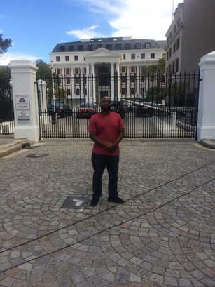
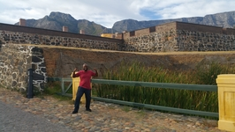
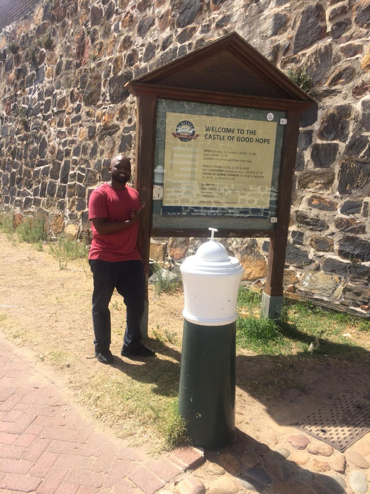

Parliament

Parliament plays a direct and active role in national affairs. It is the place where the members of Parliament look after your interests. Members of Parliament (MPs).For our country’s transition from apartheid rule to democracy, an interim constitution was negotiated between representatives of organisations involved in the liberation struggle, represented political parties and other interest groups. After the first democratic elections on 27 April 1994, members of the National Assembly and Senate, as the elected public representatives at the time, met as a body called the Constitutional Assembly to write a new Constitution. In 1996, after two years of public consultation and much debate, the new Constitution was finally adopted.
Castle of Goodhope

The Castle of Good Hope is the oldest surviving building in South Africa and has been the centre of civilian, political and military life in the Cape since 1666.In its current state, the Castle is considered to be one of the best examples of preserved 17th century DEIC architecture in the world. The Castle is currently undergoing renovation – for the first time in 20 years – which will further enhance its appeal and position it well to become South Africa’s next UNESCO World Heritage Site.
City Hall

The building was designed as the result of a public competition, the winning architects being Messrs Harry Austin Reid and Frederick George Green, with the contractors being Messrs T. Howard and F. G. Scott. Much of the building material, including fixtures and fittings was imported from Europe.The Organ was built by Messrs Norman and Beard of London and Norwich, the specifications were drawn up by Sir George Martin, organist of St Paul's Cathedral in London especially for the City Hall. the workmanship and materials are of high quality, and the organ made from mahogany, teak and pine.